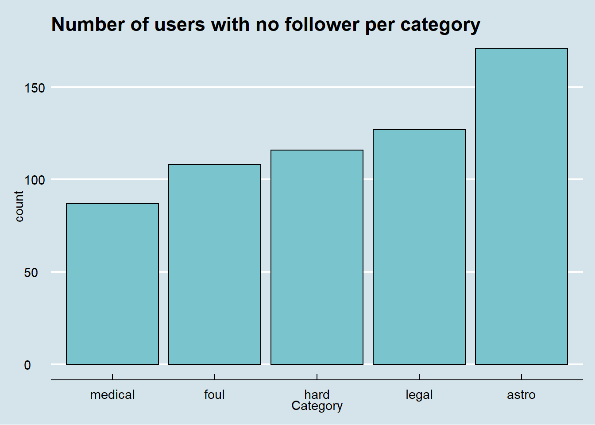

Chapter 4 Missing values
Upon checking the number of missing values in each column in the parsed data frame, we found that most missing values occur to either irrelevant attributes of the tweets (such as coordinate data) or those information about retweets and the corresponding users (such as ReTweetUserScreenName).
## Category NumMatchWords MatchWords TweetUserScreenName
## 0 0 0 0
## TweetUserDaysOn TweetUserNumFollowers TweetUserNumFollowing TweetUserFollowRatio
## 0 0 0 609
## TweetUserNumTweets TweetUserNumFavorites TweetUserVerified TweetUserProtected
## 0 0 0 0
## TweetUserDefaultProfilePic TweetNumQuoted TweetNumReplied TweetNumFavorite
## 0 0 0 0
## TweetNumRetweet IsRetweet NumMedia NumUrls
## 0 0 0 0
## NumHashtags NumContributors NumUserMentions NumSymbols
## 0 60864 0 0
## PossiblySensitive Source SourceUrl Place
## 0 0 57050 60311
## Longitude Latitude TweetId TweetCreatedAt
## 60756 60756 0 0
## ReTweetUserScreenName ReTweetUserDaysOn ReTweetUserNumFollowers ReTweetUserNumFollowing
## 28296 28296 28296 28296
## ReTweetUserFollowRatio ReTweetUserNumTweets ReTweetUserNumFavorites ReTweetNumQuoted
## 28346 28296 28296 28296
## ReTweetNumReplied ReTweetNumFavorite ReTweetNumRetweet ReTweetUserVerified
## 28296 28296 28296 28296
## ReTweetUserProtected ReTweetUserDefaultProfilePic Lang TweetText
## 28296 28296 0 0
## ReTweetText
## 28296The only attribute with missing values of concern is TweetUserFollowRatio, which is the ratio of the following count to the follower of a Twitter user. After exploring the data, we discovered that the entries with missing TweetUserFollowRatio match exactly with those with 0 followers count and non-verified status. Since it makes sense that an user with no follower is not verified, it is safe to conclude that the 0 values in TweetUserNumFollowers are the direct cause of the missing values. Since the 0 value for followers count would lead to a following/followers ratio of positive infinity, we simply drop the entries with 0 TweetUserNumFollowers.
Looking into the distribution of user with no follower over each category, we found no clear relationship of whether having no follower indicates “quality” of an user.
